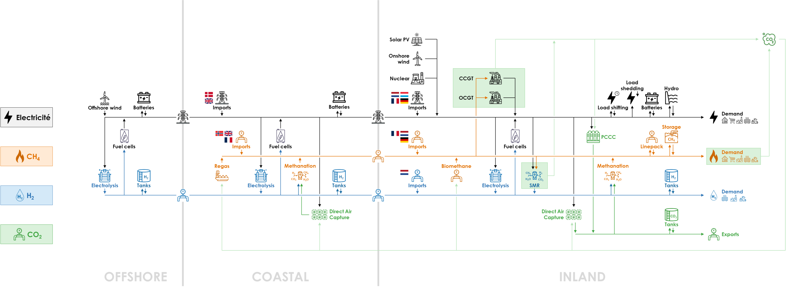

Application of the methodology to Belgium’s energy system
Belgium’s energy system is modelled according to the methodology defined in the Methodology section with the topology and technologies illustrated in this section.
The overall topology is shown hereunder. The three clusters – OFFSHORE, COASTAL and INLAND – are displayed, along with the three energy carriers – electricity, methane and hydrogen. The neighbouring countries are modelled as import nodes.

The main elements of Belgium’s energy system are:
- Three clusters: INLAND (Belgium); COASTAL (coastal area, also called “Zeebrugge” cluster); OFFSHORE (Offshore Belgian exclusive economic zone). Energy transport capacity is unlimited within clusters, but capacity is limited by existing infrastructure or has to be built between clusters;
- Energy demand (final demand) for electricity, methane and hydrogen (including derivatives) for 2050 are defined in the “Distributed Energy” scenario of the TYNDP 2022 published by ENTSOG/ENTSO-E (whole final demand except “agriculture” and “energy branch” demand). Energy demand is located in the INLAND cluster. Demand profiles are based on historical data for 2009;
- Demand-side management is implemented for electricity – load shifting, load shedding;
- Domestic energy production capacities can be built up to the maximum potential defined in ENTSOG-ENTSO-E’s TYNDP 2022. Solar PV and onshore wind are in the INLAND cluster, while offshore wind is in the OFFSHORE cluster;
- Energy can be imported: green electricity, grey methane (natural gas) and green hydrogen can be imported in the COASTAL or INLAND clusters from neighbouring countries where green electricity imports are assumed to follow the same production profile of renewable electricity in Belgium (because of the high correlation of wind and solar production); grey or green/synthetic liquid methane can be imported by ship in the COASTAL cluster (Zeebrugge harbour);
- Grids for electricity and methane are uncongested inside the clusters and the current capacity between clusters (if any) can be increased through investments;
- Conversion technologies: power-to-hydrogen (electrolysis) can be built in all clusters; hydrogen-to-power (fuel cells) can be built in the COASTAL and INLAND clusters; methane-to-power (CCGTs, OCGTs but no CHPs), Methanation and Steam Methane Reforming (SMR) can be deployed in the INLAND cluster;
- Storage technologies: batteries for electricity and storage tanks for hydrogen can be built in all clusters, depending on physical capabilities; linepack and underground storage for methane is available in the INLAND cluster only and cannot be expanded;
- Carbon dioxide removal technologies: post-combustion carbon capture (PCCC) can be built to capture CO2 emissions at the exhaust of gas-to-power and SMR facilities in the INLAND cluster; and Direct Air Capture (DAC) can be built in the COASTAL and INLAND clusters, in order to achieve net-zero CO2 emissions.
Detailed topology of the clusters

A schema of the OFFSHORE cluster is shown on the left side. It considers 2 energy carriers: electricity and hydrogen. One additional commodity is defined: water. There are 7 nodes:
- 4 conversion nodes: wind offshore, fuel cell, electrolyser, desalination;
- 3 flexibility nodes: electricity, water and hydrogen storage.
The COASTAL cluster is shown on the right side. It considers 3 energy carriers – electricity, hydrogen and methane. One additional commodity is defined: carbon dioxide. There are 10 nodes:
- 4 conversion nodes: fuel cells, electrolyser, methanation, DAC
- 2 flexibility nodes: electricity and hydrogen storage
- 4 import nodes: grey methane (natural gas) from Norway, UK and France, synthetic methane import.
The INLAND cluster is shown hereunder. It considers 3 energy carriers: electricity, hydrogen and methane. One additional commodity is defined: carbon dioxide.
There are 28 nodes:
- 13 conversion nodes: solar PV, wind onshore, electrolyser, fuel cell, DAC, methanation, biomethane production, CCGT, OCGT, SMR, 3 PCCCs;
- 12 flexibility nodes: electricity storage, pumped hydro, methane storage, hydrogen and CO2 storage, linepack (methane), load shifting and 5 types of electricity load shedding;
- 2 import nodes: methane from Germany and hydrogen from the Netherlands;
- 1 export node for CO2.
Units
Energy is expressed in MWh. For hydrogen and methane, energy is expressed in lower heating value (LHV).
Power is expressed in GW. For hydrogen and methane, power (capacity, flow) is the hourly average (equivalent to GWh/h) and expressed in lower heating value (LHV).
Carbon capture capacity or flow rate is expressed in ktCO2/h or kt/h.
Carbon storage is expressed in ktCO2 or kt.
Main parameters
All technologies, except for natural gas storage, pumped-hydro power plants, and electrical lines and natural gas pipelines in Belgium are assumed to be completely replaced by 2050. The installed capacities of technologies in neighbouring countries are considered constant throughout the optimization horizon. The electrical lines and natural gas pipelines connecting Belgium to its neighbours are assumed to be established at their current capacities, taking future projects proposed by Elia and Fluxys into account. A gas pipeline connecting Belgium to the Netherlands is repurposed for hydrogen transportation.
The relevant parameters of all technologies related to the production, transport, conversion and storage of electricity, methane and hydrogen – maximum capacity, capex, fixed opex, variable opex, conversion factors, flexibility, efficiency – are listed and referred to in Mbenoun et al., 2024.
Among other parameters, the potential for renewable production in Belgium in 2050 is defined according to Elia’s Roadmap to 2050 study and Valbiom study:
- Solar PV: 50 GW;
- Onshore wind: 9 GW;
- Offshore wind: 8 GW;
- Biomethane: 14.1 TWh/y.
Other important parameters in the Base Case that will be modified in the sensitivity analyses are:
- Offshore wind distance from shore: 40 km;
- CO2 budget for the whole energy system in 2050: 0% (net-zero energy system) of 77.6 MtCO2 (CO2 emissions of most of the energy system in 1990, cf. Berger et al., 2020);
- Import cost of hydrogen: €75/MWh or €2.5/kg;
- CO2 export capacity : 3.5 ktCO2/h or about 30 MtCO2/year.
Hourly production profiles for solar PV, onshore and offshore wind use 2009 historical time series. Hourly consumption profiles for natural gas are based on historical data from Fluxys (2018 for industry and 2009 for heating). Hourly consumption profiles for electricity (heating, industry) are defined in the TYNDP 2022. Hourly consumption profiles for hydrogen in heating, industry and transport are assumed to be the same as for natural gas.